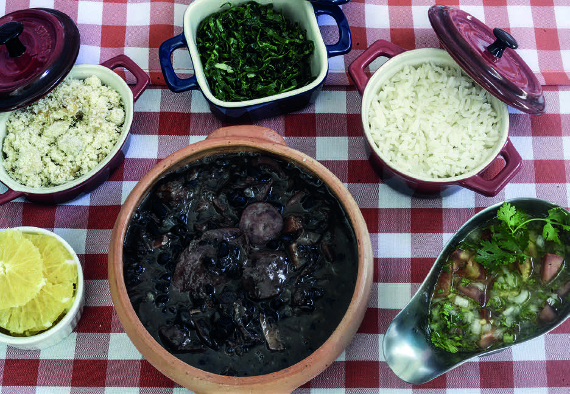
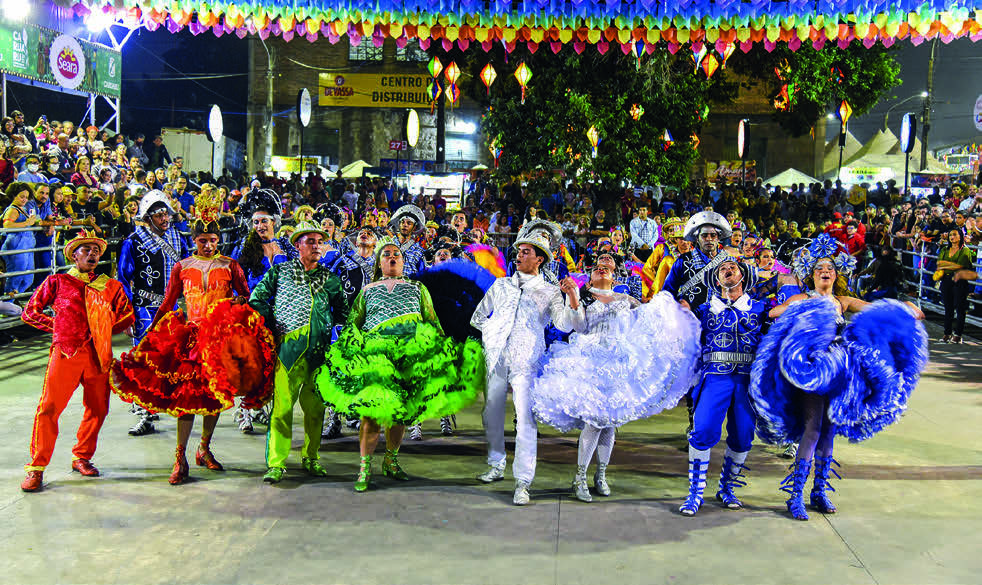

OUTRAS MANIFESTAÇÕES CULTURAIS
OBSERVE ABAIXO AS IMAGENS DE ALGUMAS MANIFESTAÇÕES CULTURAIS BRASILEIRAS.

FEIJOADA E ACOMPANHAMENTOS.
Leo Caldas/Pulsar Imagens

QUADRILHA JUNINA LUAR DO SERTÃO DA CIDADE DE SOBRAL, CEARÁ, 2022.
Cesar Diniz/Pulsar Imagens
Antes de iniciar o tópico “Outras manifestações culturais”, converse com os estudantes sobre o que sabem das tradições em torno das Festas Juninas, o que tais manifestações lhes trazem à memória e se gostam de mantê-las e transmiti-las aos mais jovens.
Depois, peça-lhes que deem exemplos de comidas e festas típicas da cidade ou estado onde vivem.
Esse é um bom momento para valorizar a diversidade cultural de nosso país, incentivando o respeito à essa diversidade.
Apresente as imagens destacando brevemente cada uma delas.
Explique que as imagens representam aspectos importantes da cultura do Brasil.
Peça aos estudantes que observem atentamente as imagens e, se julgar necessário, ajude-os com a leitura das legendas.
Incentive-os a pensar sobre o que veem e a fazer conexões com suas experiências e seus conhecimentos.
Conclua destacando a importância de valorizar e preservar as manifestações culturais brasileiras.